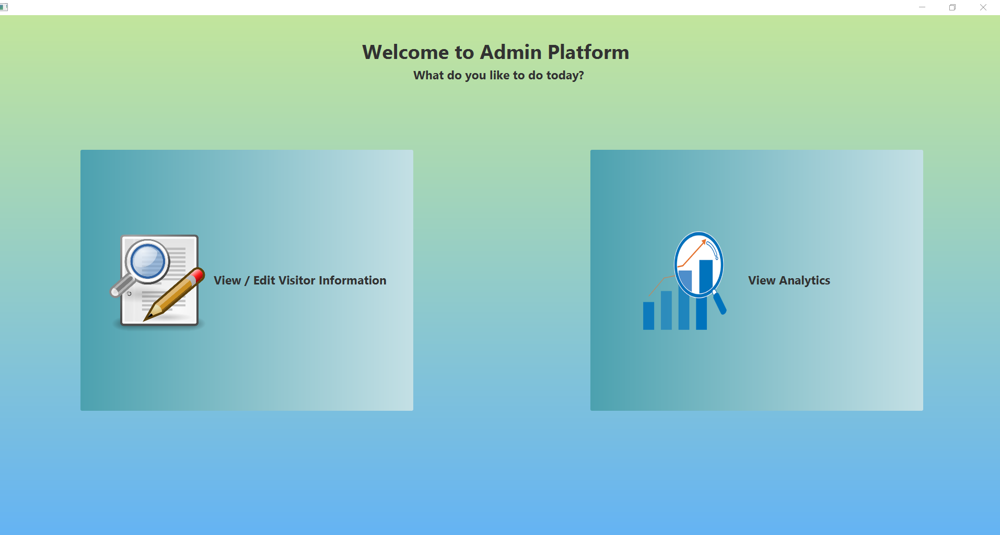
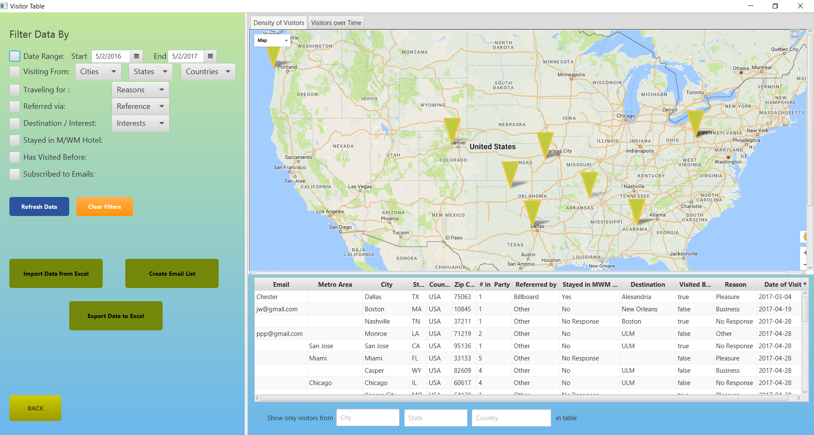
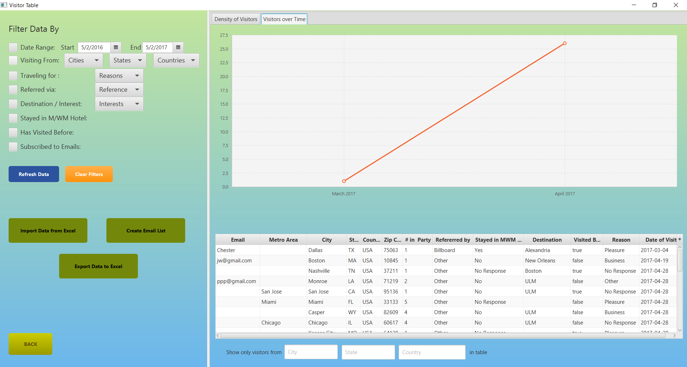

The administrative platform was designed to allow employees of MWMCVB view, edit, and analyze data given by the visitors that came by. It can be run on most any computer connected to the Internet, because it needs access to the database your data is stored on. Unlike the visitor map, it is also password protected. The short guides below will assist you in discovering trends and interesting pieces of information within the data that you collect.
The Platform home is the main page of the administrative platform. From here, employees of MWMCVB can access both specialized views: the Visitor View, in which an employee can add, edit, and delete visitor records after they’ve been submitted, in case any further information is learned during their visit; and the analytics view, in which an employee can view specific subsets of the visitors, see population density, and change over time of these visitors.
The Visitor View may be accessed by selecting the Visitor View button, which will load the Visitor View, where one may add (in case someone hasn’t registered, prefers paper forms, etc.), edit (in case further information is learned throughout the visit), and delete information records from visitors (in case of erroneous records being submitted).
The Analytics View may be accessed by selecting the Analytics View button, which will load the Analytics View, where one may observe trends in visitor data such as sparseness / closeness to metropolitan areas and the change in the number of visitors over time.
Our visitor view allows you to access detailed information about the visitors you have received. You may also add and edit visitors as you find the need to. This flexibility keeps your from being reliant on just one point of data entry. Some people may not want to input information on a computer, but they are willing to talk to staff members about their travel plans. This would be a great opportunity for a staff member to use one of the functions of this view: the ability to add a visitor without going through the normal visitor form. Again this is just some of the functionality that this view provides. Once you get the hang of it, you will find it quite handy.

Upon loading the Visitor View, information of all visitors who have visited within the past seven days is shown on the table view. To search for visitors from a different range of dates, change the values of the two date pickers to achieve the desired time period, and select the “Refresh Table” button.
To only show visitors from a certain area, you may also begin typing the name of the city, state (if from the US), or country in the respective text areas below the table view. The table will then filter through the records to show only those whose city, state, or country contain the text written in the
When learning new information concerning the visiting party, it may become necessary to change what the user has entered. This can be accomplished with the visitor table.
The row concerning a visitor must be double-clicked, which create a text field in the selected cell.
Upon striking the “Enter” key on a keyboard, the information will be saved and passed to the database. Data will only be saved for the selected visitor, and only when a change is made followed by striking the “Enter” key
Our system allows for visitor information to be added directly from the administrator program. To create a single record, select the “Add Visitor” button. This will direct you to a concise form to fill in all information for the visitor. Once you have satisfactorily completed the form (keep in mind that not all fields must be filled), select the “Add Visitor Info” button to create the record.
To return to the Visitor View without creating the visitor record, select the “Back” button. When prompted, select “OK” to return to the Visitor View, or select “Cancel” to continue creating the visitor record.

As time goes on you will acquire large amounts of visitor locations and information. This can hamper performance of your map and analytics software; it may become necessary to delete or export old visitor data. To accomplish the deletion of aged data, select the Delete Aged Data button. The system will then prompt if you are sure you’d like to delete the data that was created before two years ago. To continue with the PERMANENT removal of this data, select “Yes” at the prompt.
Creating more than one visitor record at a time is not currently supported by the system. Instead, records may be read from a Microsoft Excel spreadsheet. To do this, first select the “Import from Excel” button.

The system will prompt you to generate a template file to use for the import. The format created by this file is required for successful importing of data. Select “Generate Template”, and you will be allowed to choose a destination for the template file. You will then be returned to the Visitor View. Alternatively, select “Cancel” to return to the Visitor View.
The generated template file may then be opened and edited. Columns may be copied and pasted into the spreadsheet, but it is important to ensure the correct data is being placed in the correct columns. These are:
| Column | Data Field | Expected Format | Example | ||||
|---|---|---|---|---|---|---|---|
| A | up to 64 character text containing an “@” and a domain extension | philipgrahman300@gmail.com | |||||
| B | City | up to 32 character text | Baton Rouge | ||||
| C | Metropolitan Area | up to 32 character text | Dallas-Fort Worth | ||||
| D | State | 2 character state code | La | ||||
| E | Country | up to 32 character text | Uganda | ||||
| F | Zip | 5-digit postal code | 71110 | ||||
| G | Number in party | up to 3-digit numeric value | 12 | ||||
| H | How the visitor was referred to the bureau | “Interstate Sign”, “Billboard”, “Other”, “No Response” | One of the options | ||||
| I | Whether or not the visitor is staying in a Monroe / West Monroe hotel | “Yes”, “No”, “No Response” | One of the options | ||||
| J | Destination / Interests | Up to 128 character text, in a comma-separated list | Duck Commander, Catfish Charlie’, Pecanland Mall | ||||
| K | Have they visited before? | “true”, “false” | One of the options | ||||
| L | Reason for Traveling | “Business”, “Pleasure”, “Convention”, “Other”, “No Response” | One of the options | ||||
| M | Date of Visit | Date in MM/DD/YYYY format | 08/17/2016 |
Once all desired information is entered into the template spreadsheet, save and CLOSE the spreadsheet and return to the application’s Visitor View. Select “Import from Excel” once again, but when prompted, select “Import from File”. Navigate to your saved spreadsheet, and the data will be read and passed to the database. This may take a few seconds. Data will be read beginning from cell “A2”, and will create a record for each row that contains information after that.
To export information to a Microsoft Excel spreadsheet, select the “Export from Excel” button. The system will then prompt for a filename and destination for the spreadsheet to be generated.
Our system will record the email addresses of those interested in more information about Monroe and West Monroe. You can generate a mailing list as a Microsoft Excel file by selecting the “Create Mailing List” button. The system will then prompt for a filename and destination for the spreadsheet to be generated.
Because the mailing list is generated as a single-column Excel spreadsheet, it can be easily imported into Constant Contact’s document reader and added to a mailing list.
The analytics view allows for deeper evaluation of trends and other data than the visitor view. This view allows for viewing data as graphs, giving another visual way to see the data. The filter system is paired with the map, allowing you to see (for instance) all the places where people have come from that wanted to see Duck Dynasty. This is just one of several ways to use the filtering, you will find your own prefered ways of using the map, spreadsheets, and filters. This information is very useful for compiling statistics of what attractions are most popular and where to market these attractions the most effectively. Please enjoy.
See “Importing Information from Excel” in the above section.
See “Exporting Information from Excel” in the above section.
See “Creating a Mailing List” in the above section.
We provide you with the means to apply “filters” to the data. This allows you to, for instance, see how many people have come from Dallas within the past year. Although it might be tricky at first, these can prove to be great analytical tools. You can create filters by activating them, by clicking the leftmost box next to the name of the filter that you want. If applicable, you then select the option in the dropdown box that you wish to see. These dropdowns are populated from the database using data given by the visitors.You then select the “Refresh Table” button to view only the information you’ve selected, not only in the table on the bottom right of the view, but also in the data views.
There are two main views with which to observe trends in the information: viewing the geographic density of visitors and viewing the number of visitors entering over time. Both of these are reached through the tabs on the top right of the Analytics View.
By default, the geographic density data view is loaded. This view uses a similar Google Map to the visitor application, and will display the locations of visitors who have previously come to the MWMCVB. The visitors over time view collects the number of visitors who come to the MWMCVB over each calendar month and displays them in a line graph form.
Both of these forms will react to filtering data, which makes it easy to see trends in what visitors come to our area and from where.
